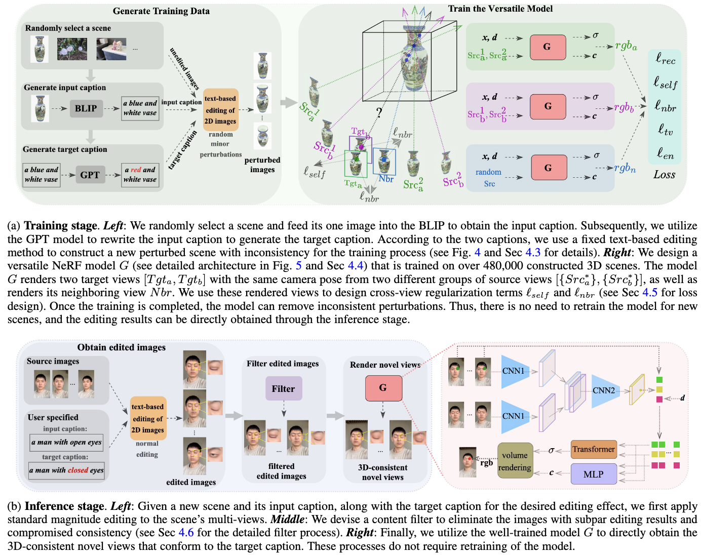

State-of-the-art methods are not versatile since they require training 10,000 models for 100 types of editing on 100 scenes. In contrast, our research aims to accomplish these edits with a single model.
We initially utilized a 2D editing model to perform the preliminary editing on the images of a 3D scene. We subsequently apply a designed content filter to remove images with poor editing results that cause significant 3D inconsistency. However, the remaining images after selection may still contain inconsistent 3D results, in which we consider as noise perturbation to the consistent edited images due to the inherent stochastic and diverse nature of the 2D editing model. Thus, we leverage this characteristic to create training data pairs by generating image captions through the BLIP model and target captions via GPT, then applying minor perturbations associated with these captions to a 3D scene. Therefore, these perturbations can be viewed as noise, as well as unedited images as pseudo-ground truth. Based on this produced training data, we introduce two cross-view regularization terms during training, including the self and neighboring views, to improve the 3D editing consistency. The former requires the NeRF model to generate consistent results for the same target view that derives from two different source views, while the latter enforces the overlapping pixel values between the target and adjacent views to be approximately close. Finally, both the perturbation dataset and regularization terms are incorporated into our generalizable NeRF model training to facilitate its 3D consistency.
